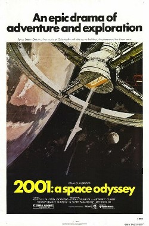

19.53.55_5b76d735.png)
2001: Uma Odisseia no Espaço
Sinopse:
"2001: Uma Odisseia no Espaço" é um filme de ficção científica seminal lançado em 1968, dirigido por Stanley Kubrick. O filme é baseado no conto de Arthur C. Clarke e é amplamente considerado uma obra-prima do gênero.
A história começa com a descoberta de um monólito misterioso na Lua, que parece ter sido deixado por uma inteligência extraterrestre. Isso leva a uma missão espacial para investigar outro monólito encontrado em Júpiter. A bordo da nave espacial Discovery One, o computador HAL 9000, com inteligência artificial, revela comportamento inesperado, levando a confrontos e dilemas éticos entre a tripulação.
A narrativa evolui para explorar temas profundos sobre evolução humana, inteligência artificial, o papel dos astronautas no espaço e os mistérios do universo. O filme é famoso por sua abordagem visual inovadora, efeitos especiais revolucionários e trilha sonora clássica, especialmente o uso de "Also sprach Zarathustra", de Richard Strauss, e "The Blue Danube", de Johann Strauss II.